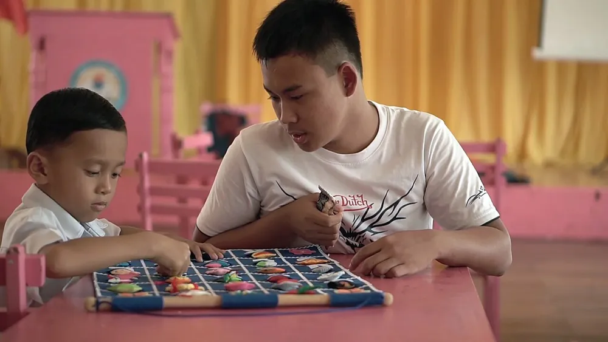

Perbedaan sekolah inklusi dan SLB terletak pada siapa teman belajarnya. Sekolah inklusi adalah sekolah reguler tempat anak penyandang disabilitas belajar bersama anak lain di kelas yang sama, dengan akomodasi yang layak. SLB (Sekolah Luar Biasa) hanya melayani peserta didik penyandang disabilitas, memakai kurikulum khusus dan guru pendidikan khusus di tempat belajar khusus. Keduanya diakui UU Nomor 8 Tahun 2016, jadi pilihan terbaik bergantung pada kebutuhan dukungan anak.
Catatan sebelum membaca
Artikel ini adalah informasi umum untuk orang tua, guru, dan pendamping. Kutipan peraturan diambil dari naskah resmi di JDIH BPK. Keputusan sekolah untuk anak sebaiknya didasarkan pada asesmen oleh tenaga profesional dan diskusi langsung dengan pihak sekolah.
Daftar Isi
Pengertian Sekolah Inklusi dan SLB
Istilah resminya bisa ditemukan di Penjelasan Pasal 10 huruf a UU Nomor 8 Tahun 2016 tentang Penyandang Disabilitas. Undang-undang ini membedakan dua jalur:
- Pendidikan secara inklusif adalah pendidikan bagi peserta didik penyandang disabilitas untuk belajar bersama dengan peserta didik bukan penyandang disabilitas di sekolah reguler atau perguruan tinggi. Sekolah yang menjalankannya biasa disebut sekolah inklusi.
- Pendidikan secara khusus adalah pendidikan yang hanya memberikan layanan kepada peserta didik penyandang disabilitas dengan kurikulum khusus, proses pembelajaran khusus, bimbingan, dan/atau pengasuhan oleh tenaga pendidik khusus, di tempat belajar khusus. Bentuk sekolahnya yang paling dikenal adalah SLB.
Jauh sebelumnya, Pasal 32 ayat (1) UU Nomor 20 Tahun 2003 tentang Sistem Pendidikan Nasional sudah mendefinisikan pendidikan khusus sebagai pendidikan bagi peserta didik yang memiliki tingkat kesulitan mengikuti proses pembelajaran karena kelainan fisik, emosional, mental, sosial, dan/atau memiliki potensi kecerdasan dan bakat istimewa. Penjelasan lebih lengkap tentang jenis SLB (SLB-A sampai SLB-G) ada di artikel SLB adalah, sedangkan konsep inklusi dibahas tuntas di pendidikan inklusi.
Tabel Perbedaan Sekolah Inklusi dan SLB
| Aspek | Sekolah inklusi | SLB (Sekolah Luar Biasa) |
|---|---|---|
| Teman belajar | Campuran, anak penyandang disabilitas bersama anak lain | Hanya peserta didik penyandang disabilitas |
| Jenis sekolah | Sekolah reguler (SD, SMP, SMA/SMK, dan sederajat) | Satuan pendidikan khusus |
| Kurikulum | Kurikulum sekolah yang dimodifikasi sesuai ragam disabilitas | Kurikulum pendidikan khusus |
| Guru | Guru kelas atau guru mapel, didukung guru pendidikan khusus | Guru pendidikan khusus sebagai pengajar utama |
| Ukuran kelas | Umumnya seperti kelas reguler | Umumnya lebih kecil, dikelompokkan menurut ragam disabilitas |
| Fokus | Akademik dan sosial bersama teman sebaya | Layanan khusus yang intensif, termasuk kemandirian dan keterampilan |
| Lokasi | Sekolah reguler lebih banyak dan sering lebih dekat rumah | Jumlah lebih terbatas, sebagian anak harus menempuh jarak jauh |
Baris ukuran kelas dan fokus di atas menggambarkan pola umum, bukan aturan baku. Praktik tiap sekolah bisa berbeda, jadi selalu tanyakan langsung saat survei.
Dasar Hukum Keduanya
Hal terpenting yang perlu dipahami orang tua: sekolah inklusi dan SLB sama-sama sah dan sama-sama hak anak. Tidak ada yang "kelas dua".
- Pasal 10 huruf a UU 8/2016 menjamin hak penyandang disabilitas mendapatkan pendidikan bermutu di semua jenis, jalur, dan jenjang pendidikan secara inklusif dan khusus.
- Pasal 40 UU 8/2016 mewajibkan Pemerintah dan Pemerintah Daerah menyelenggarakan atau memfasilitasi pendidikan penyandang disabilitas melalui pendidikan inklusif dan pendidikan khusus, mengikutsertakan anak penyandang disabilitas dalam program wajib belajar 12 tahun, dan mengutamakan anak penyandang disabilitas bersekolah di lokasi yang dekat tempat tinggalnya.
- Pasal 42 UU 8/2016 mewajibkan Pemerintah Daerah memfasilitasi pembentukan Unit Layanan Disabilitas untuk mendukung pendidikan inklusif tingkat dasar dan menengah. Fungsinya antara lain meningkatkan kompetensi guru sekolah reguler, menyediakan pendampingan bagi peserta didik, menyediakan media pembelajaran dan alat bantu, serta melakukan deteksi dan intervensi dini.
- Permendikbudristek Nomor 48 Tahun 2023 mengatur akomodasi yang layak bagi peserta didik penyandang disabilitas, yaitu modifikasi dan penyesuaian yang tepat dan diperlukan agar mereka bisa menikmati haknya berdasarkan kesetaraan (Pasal 1). Aturan ini berlaku mulai dari PAUD formal sampai pendidikan tinggi.
Artinya, sekolah reguler tidak bisa sekadar "menerima" anak lalu membiarkannya menyesuaikan diri sendiri. Sekolah yang menerima peserta didik penyandang disabilitas diharapkan menyediakan dukungan yang sesuai. Hak-hak ini dibahas lebih rinci di artikel anak ABK harus sekolah di mana.
Beda Kurikulum dan Cara Belajar
Di SLB, kurikulum pendidikan khusus dipakai sejak awal. Kelompok belajar biasanya dibentuk menurut ragam disabilitas, misalnya tunanetra, tunarungu, atau hambatan intelektual, sehingga metode dan media bisa disiapkan sesuai kebutuhan kelompok itu.
Di sekolah inklusi, anak mengikuti kurikulum sekolah reguler dengan penyesuaian. Pasal 11 Permendikbudristek 48/2023 mengatur bahwa satuan pendidikan menyediakan kurikulum dalam bentuk modifikasi sesuai ragam disabilitas:
- Untuk anak tanpa hambatan intelektual (misalnya disabilitas fisik atau sensorik), modifikasi dilakukan pada standar proses, yaitu cara mengajarnya. Contohnya materi dalam huruf braille, juru bahasa isyarat, atau waktu ujian yang lebih panjang.
- Untuk anak dengan hambatan intelektual, modifikasi bisa mencakup standar kompetensi lulusan, standar isi, standar proses, dan standar penilaian. Target belajarnya disesuaikan dengan kemampuan anak.
Penyesuaian ini tidak ditebak-tebak. Pasal 12 aturan yang sama menyebut bentuk akomodasi diberikan berdasarkan asesmen fungsional oleh sekolah, lalu dipenuhi melalui konsultasi yang melibatkan peserta didik, orang tua atau wali, dan Unit Layanan Disabilitas. Di lapangan, hasilnya sering dituangkan dalam program pembelajaran individual (PPI). Tahap penilaian awalnya dijelaskan di artikel asesmen ABK.

Beda Guru dan Layanan Pendamping
Di SLB, guru pendidikan khusus adalah pengajar utama di kelas. Di sekolah inklusi, pengajar utamanya tetap guru kelas atau guru mata pelajaran, dengan dukungan tambahan.
Permendikbudristek 48/2023 Pasal 10 mengatur bahwa guru pendidikan khusus ditugaskan pada Unit Layanan Disabilitas. Tugasnya memberikan layanan pembelajaran bagi peserta didik penyandang disabilitas dan/atau membimbing guru lain dalam melayani mereka, dan satu guru pendidikan khusus bisa bertugas di lebih dari satu sekolah. Di banyak sekolah inklusi, peran ini dikenal sebagai guru pembimbing khusus (GPK).
Selain itu, sebagian keluarga memakai shadow teacher yang mendampingi satu anak di kelas. Pendekatan mengajar bersama seperti co-teaching di kelas inklusi juga membantu guru reguler dan guru pendidikan khusus berbagi peran.
Kelebihan dan Tantangan Masing-Masing
Sekolah inklusi
- Kelebihan: anak bergaul setiap hari dengan teman sebaya yang beragam, berlatih keterampilan sosial di situasi nyata, dan sering bisa bersekolah lebih dekat dengan rumah. Teman sekelas juga belajar menghargai perbedaan.
- Tantangan: kesiapan sekolah sangat beragam. Jumlah guru pendamping, pelatihan guru kelas, dan sarana pendukung belum merata, sehingga kualitas layanan bisa berbeda jauh antarsekolah.
SLB
- Kelebihan: guru terlatih menangani ragam disabilitas tertentu, kelas biasanya lebih kecil, dan sarana khusus seperti alat bantu dengar atau buku braille lebih mudah tersedia. Program kemandirian dan keterampilan sering menjadi bagian inti.
- Tantangan: kesempatan bergaul dengan anak nondisabilitas lebih sedikit, dan jumlah SLB lebih terbatas, sehingga sebagian anak harus menempuh perjalanan jauh. Cari lokasinya lewat panduan SLB terdekat.
Cara Memilih yang Cocok untuk Anak
Tidak ada jawaban yang sama untuk semua anak. Langkah berikut membantu orang tua mengambil keputusan yang lebih terarah:
- Mulai dari asesmen. Minta asesmen dari psikolog, dokter tumbuh kembang, atau tenaga ahli pendidikan khusus untuk memahami kekuatan dan kebutuhan dukungan anak.
- Nilai kebutuhan dukungan harian. Anak yang butuh dukungan sangat intensif sepanjang hari, misalnya untuk komunikasi dasar atau keselamatan, bisa lebih terlayani di SLB. Anak yang bisa mengikuti rutinitas kelas dengan akomodasi sering berkembang baik di sekolah inklusi.
- Survei sekolah langsung. Tanyakan berapa guru pendamping yang tersedia, bagaimana penyusunan program pembelajaran individual, dan bagaimana sekolah menangani perundungan. Amati suasana kelas bila diizinkan.
- Tanyakan akomodasi secara spesifik. Misalnya penyesuaian tugas, waktu ujian, tempat duduk, atau media belajar. Jawaban yang konkret menunjukkan kesiapan sekolah.
- Libatkan anak. Perhatikan kenyamanan dan pendapat anak setelah kunjungan atau masa percobaan.
- Evaluasi berkala. Pilihan sekolah bukan keputusan seumur hidup. Anak bisa pindah dari SLB ke sekolah inklusi atau sebaliknya bila kebutuhannya berubah.
Peran keluarga selama proses ini sangat menentukan. Tipsnya dibahas di peran orang tua dalam pendidikan inklusi.
Pendampingan di YUKA
YUKA mengelola layanan pendidikan inklusi bagi anak berkebutuhan khusus di Sleman. Ayah dan Bunda yang sedang menimbang pilihan sekolah bisa melihat informasi di halaman sekolah inklusi Sleman atau berdiskusi dengan tim YUKA melalui halaman kontak.
Pertanyaan yang Sering Diajukan
Apa perbedaan utama sekolah inklusi dan SLB?
Sekolah inklusi adalah sekolah reguler yang menerima anak penyandang disabilitas untuk belajar bersama anak lain di kelas yang sama. SLB (Sekolah Luar Biasa) hanya melayani peserta didik penyandang disabilitas, dengan kurikulum khusus, proses pembelajaran khusus, dan guru pendidikan khusus di tempat belajar khusus.
Mana yang lebih baik, sekolah inklusi atau SLB?
Tidak ada yang selalu lebih baik. UU Nomor 8 Tahun 2016 mengakui keduanya sebagai jalur pendidikan yang sah. Pilihan terbaik bergantung pada kebutuhan dukungan anak, kesiapan sekolah memberi akomodasi yang layak, dan hasil asesmen. Banyak anak cocok di sekolah inklusi, sementara anak dengan kebutuhan dukungan sangat tinggi sering lebih terlayani di SLB.
Apakah anak berkebutuhan khusus boleh ditolak sekolah reguler?
UU Nomor 8 Tahun 2016 menjamin hak penyandang disabilitas mendapatkan pendidikan bermutu secara inklusif dan khusus, dan Pemerintah Daerah wajib mengutamakan anak penyandang disabilitas bersekolah di lokasi dekat tempat tinggalnya. Jika anak ditolak, orang tua bisa menanyakan alasannya secara tertulis dan menghubungi dinas pendidikan setempat.
Apakah kurikulum sekolah inklusi sama dengan kurikulum SLB?
Tidak persis sama. Di sekolah inklusi, anak mengikuti kurikulum sekolah yang dimodifikasi sesuai ragam disabilitasnya. Permendikbudristek 48/2023 mengatur bahwa bagi anak dengan hambatan intelektual, modifikasi bisa mencakup standar kompetensi lulusan, isi, proses, dan penilaian. SLB memakai kurikulum pendidikan khusus sejak awal.
Bisakah anak pindah dari SLB ke sekolah inklusi atau sebaliknya?
Bisa. Pilihan sekolah bukan keputusan seumur hidup. Evaluasi perkembangan anak secara berkala bersama guru dan tenaga ahli, lalu pertimbangkan pindah jalur bila kebutuhan anak berubah atau dukungan di sekolah saat ini tidak lagi mencukupi.
Artikel Terkait
Sumber dan Referensi
- Undang-Undang Nomor 8 Tahun 2016 tentang Penyandang Disabilitas, JDIH BPK RI (Pasal 10, Pasal 40, Pasal 42, dan Penjelasannya)
- Undang-Undang Nomor 20 Tahun 2003 tentang Sistem Pendidikan Nasional, JDIH BPK RI (Pasal 32)
- Peraturan Menteri Pendidikan, Kebudayaan, Riset, dan Teknologi Nomor 48 Tahun 2023 tentang Akomodasi yang Layak untuk Peserta Didik Penyandang Disabilitas, JDIH BPK RI (Pasal 1, 5, 10, 11, 12)
Disclaimer: Artikel ini bersifat edukasi umum dan bukan nasihat hukum atau pengganti konsultasi dengan tenaga profesional. Sumber dicek pada 27 September 2026.